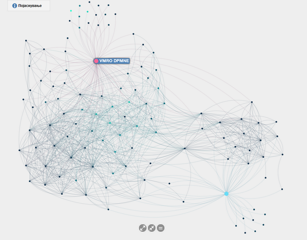

Tweeter Network Analysis
Force directed graphs between two political opponents

ForceAtlas2
Force vector algorithm proposed in the Gephi software, appreciated for its simplicity and for the readability of the networks it helps to visualize.
Visualization
Algorithm details
Fruchterman-Reingold
The basic idea in this algorithm is to minimize the energy of the system by moving the nodes and changing the forces between them.
Visualization
Algorithm details